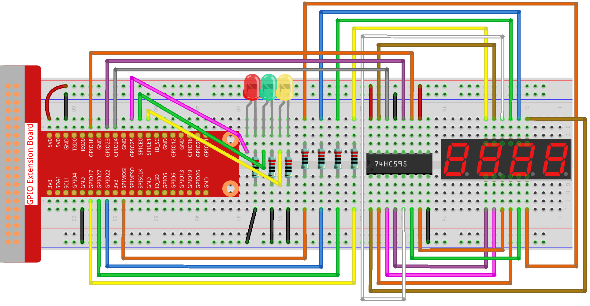

Nota
¡Hola! Bienvenido a la Comunidad de Entusiastas de SunFounder Raspberry Pi, Arduino y ESP32 en Facebook. Profundiza en el mundo de Raspberry Pi, Arduino y ESP32 junto a otros entusiastas.
¿Por qué unirse?
Soporte Experto: Resuelve problemas post-venta y desafíos técnicos con la ayuda de nuestra comunidad y equipo.
Aprende y Comparte: Intercambia consejos y tutoriales para mejorar tus habilidades.
Previsualizaciones Exclusivas: Accede anticipadamente a anuncios de nuevos productos y adelantos exclusivos.
Descuentos Especiales: Disfruta de descuentos exclusivos en nuestros productos más recientes.
Promociones Festivas y Sorteos: Participa en sorteos y promociones de temporada.
üëâ ¬øListo para explorar y crear con nosotros? Haz clic en [Aqu√≠] y únete hoy mismo.
3.1.7 Semáforo
Introducción
En este proyecto, usaremos luces LED de tres colores para simular el cambio de luces de un semáforo, y se utilizará una pantalla de 7 segmentos de cuatro dígitos para mostrar la cuenta regresiva de cada estado del semáforo.
Componentes Necesarios
Para este proyecto, necesitamos los siguientes componentes.

Diagrama Esquemático
T-Board Name |
physical |
wiringPi |
BCM |
GPIO17 |
Pin 11 |
0 |
17 |
GPIO27 |
Pin 13 |
2 |
27 |
GPIO22 |
Pin 15 |
3 |
22 |
SPIMOSI |
Pin 19 |
12 |
10 |
GPIO18 |
Pin 12 |
1 |
18 |
GPIO23 |
Pin 16 |
4 |
23 |
GPIO24 |
Pin 18 |
5 |
24 |
GPIO25 |
Pin 22 |
6 |
25 |
SPICE0 |
Pin 24 |
10 |
8 |
SPICE1 |
Pin 26 |
11 |
7 |
Procedimiento Experimental
Paso 1: Conecta el circuito.
Paso 2: Cambia al directorio de código.
cd ~/davinci-kit-for-raspberry-pi/python-pi5
Paso 3: Ejecuta el archivo.
sudo python3 3.1.7_TrafficLight.py
Al ejecutar el código, los LED simularán el cambio de colores de un semáforo. Primero, el LED rojo se enciende durante 60 segundos, luego el LED verde se enciende durante 30 segundos y, finalmente, el LED amarillo se enciende durante 5 segundos. Después, el LED rojo vuelve a encenderse por 60 segundos. Este ciclo de acciones se repetirá continuamente. Mientras tanto, la pantalla de 7 segmentos de 4 dígitos muestra la cuenta regresiva en todo momento.
Código
Nota
Puedes Modificar/Restablecer/Copiar/Ejecutar/Detener el código a continuación. Antes de eso, necesitas ir al directorio de código fuente, como raphael-kit/python-pi5. Después de modificar el código, puedes ejecutarlo directamente para ver el efecto.
#!/usr/bin/env python3
from gpiozero import OutputDevice, LED
import threading
# Configura los pines GPIO para el registro de desplazamiento 74HC595
SDI = OutputDevice(24) # Entrada de Datos en Serie
RCLK = OutputDevice(23) # Reloj de Registro
SRCLK = OutputDevice(18) # Reloj de Registro de Desplazamiento
# Configura los pines GPIO para la selección de dígitos en la pantalla de 7 segmentos
placePin = [OutputDevice(pin) for pin in (10, 22, 27, 17)]
# Códigos de segmentos para los números 0-9 en la pantalla de 7 segmentos
number = (0xc0, 0xf9, 0xa4, 0xb0, 0x99, 0x92, 0x82, 0xf8, 0x80, 0x90)
# Configura los pines GPIO para los LED del semáforo
ledPinR = LED(25) # LED rojo
ledPinG = LED(8) # LED verde
ledPinY = LED(7) # LED amarillo
# Configuración de duración para las luces del semáforo
greenLight = 30
yellowLight = 5
redLight = 60
# Nombres de colores de las luces del semáforo
lightColor = ("Red", "Green", "Yellow")
# Inicialización de variables de estado
colorState = 0
counter = 60
timer1 = None
def setup():
""" Initialize the traffic light system and start the timer. """
global timer1
timer1 = threading.Timer(1.0, timer)
timer1.start()
def clearDisplay():
""" Clear the 7-segment display. """
for _ in range(8):
SDI.on()
SRCLK.on()
SRCLK.off()
RCLK.on()
RCLK.off()
def hc595_shift(data):
""" Shift data to the 74HC595 shift register for digit display. """
for i in range(8):
SDI.value = 0x80 & (data << i)
SRCLK.on()
SRCLK.off()
RCLK.on()
RCLK.off()
def pickDigit(digit):
""" Select a specific digit to display on the 7-segment display. """
for pin in placePin:
pin.off()
placePin[digit].on()
def timer():
""" Handle the timing for traffic light changes. """
global counter, colorState, timer1
timer1 = threading.Timer(1.0, timer)
timer1.start()
counter -= 1
if counter == 0:
counter = [greenLight, yellowLight, redLight][colorState]
colorState = (colorState + 1) % 3
print(f"counter : {counter} color: {lightColor[colorState]}")
def lightup():
""" Update the traffic light LED based on the current state. """
global colorState
ledPinR.off()
ledPinG.off()
ledPinY.off()
[ledPinR, ledPinG, ledPinY][colorState].on()
def display():
""" Display the current counter value on the 7-segment display. """
global counter
for i in range(4):
digit = counter // (10 ** (3 - i)) % 10
if i == 0 and digit == 0:
continue
clearDisplay()
pickDigit(3 - i)
hc595_shift(number[digit])
def loop():
""" Main loop to continuously update display and lights. """
while True:
display()
lightup()
def destroy():
""" Clean up resources when the script is terminated. """
global timer1
timer1.cancel()
ledPinR.off()
ledPinG.off()
ledPinY.off()
try:
setup()
loop()
except KeyboardInterrupt:
destroy()
Explicación del Código
Importa las clases
OutputDeviceyLEDde la biblioteca gpiozero, que permiten controlar dispositivos de salida y, específicamente, LEDs. También importa el módulo threading de Python, que se usará para crear y gestionar hilos para la ejecución concurrente.#!/usr/bin/env python3 from gpiozero import OutputDevice, LED import threading
Inicializa los pines GPIO conectados a la Entrada de Datos en Serie (SDI), el Reloj de Registro (RCLK) y el Reloj de Registro de Desplazamiento (SRCLK) del registro de desplazamiento.
# Configura los pines GPIO para el registro de desplazamiento 74HC595 SDI = OutputDevice(24) # Entrada de Datos en Serie RCLK = OutputDevice(23) # Reloj de Registro SRCLK = OutputDevice(18) # Reloj de Registro de Desplazamiento
Inicializa los pines para cada dígito de la pantalla de 7 segmentos y define los códigos binarios para mostrar los números del 0 al 9.
# Configura los pines GPIO para la selección de dígitos en la pantalla de 7 segmentos placePin = [OutputDevice(pin) for pin in (10, 22, 27, 17)] # Códigos de segmentos para los números 0-9 en la pantalla de 7 segmentos number = (0xc0, 0xf9, 0xa4, 0xb0, 0x99, 0x92, 0x82, 0xf8, 0x80, 0x90)
Inicializa los pines GPIO para los LEDs rojo, verde y amarillo utilizados en la simulación del semáforo. Configura la duración (en segundos) para cada color en el sistema de semáforo. Define los nombres de los colores para referencia.
# Configura los pines GPIO para los LEDs del semáforo ledPinR = LED(25) # LED rojo ledPinG = LED(8) # LED verde ledPinY = LED(7) # LED amarillo # Duración de las luces del semáforo greenLight = 30 yellowLight = 5 redLight = 60 # Nombres de los colores del semáforo lightColor = ("Red", "Green", "Yellow")
Inicializa variables para rastrear el estado de color actual, un contador para el tiempo y un marcador de posición para el objeto de temporizador.
# Inicialización de variables de estado colorState = 0 counter = 60 timer1 = None
Inicializa el sistema de semáforo y activa el hilo del temporizador.
def setup(): """ Initialize the traffic light system and start the timer. """ global timer1 timer1 = threading.Timer(1.0, timer) timer1.start()
Funciones para controlar la pantalla de 7 segmentos.
clearDisplayapaga todos los segmentos,hc595_shiftdesplaza datos hacia el registro de desplazamiento, ypickDigitactiva un dígito específico en la pantalla.def clearDisplay(): """ Clear the 7-segment display. """ for _ in range(8): SDI.on() SRCLK.on() SRCLK.off() RCLK.on() RCLK.off() def hc595_shift(data): """ Shift data to the 74HC595 shift register for digit display. """ for i in range(8): SDI.value = 0x80 & (data << i) SRCLK.on() SRCLK.off() RCLK.on() RCLK.off() def pickDigit(digit): """ Select a specific digit to display on the 7-segment display. """ for pin in placePin: pin.off() placePin[digit].on()
Administra la temporización para los cambios de luz del semáforo y actualiza el contador y el estado del color.
def timer(): """ Handle the timing for traffic light changes. """ global counter, colorState, timer1 timer1 = threading.Timer(1.0, timer) timer1.start() counter -= 1 if counter == 0: counter = [greenLight, yellowLight, redLight][colorState] colorState = (colorState + 1) % 3 print(f"counter : {counter} color: {lightColor[colorState]}")
Actualiza el estado de los LEDs del semáforo en función del estado de color actual.
def lightup(): """ Update the traffic light LED based on the current state. """ global colorState ledPinR.off() ledPinG.off() ledPinY.off() [ledPinR, ledPinG, ledPinY][colorState].on()
Calcula el dígito que debe mostrarse en cada segmento de la pantalla de 7 segmentos y lo actualiza en consecuencia.
def display(): """ Display the current counter value on the 7-segment display. """ global counter for i in range(4): digit = counter // (10 ** (3 - i)) % 10 if i == 0 and digit == 0: continue clearDisplay() pickDigit(3 - i) hc595_shift(number[digit])
Bucle principal que actualiza continuamente la pantalla y los LEDs del semáforo.
def loop(): """ Main loop to continuously update display and lights. """ while True: display() lightup()
Libera recursos cuando se termina el script, como apagar los LEDs y detener el hilo del temporizador.
def destroy(): """ Clean up resources when the script is terminated. """ global timer1 timer1.cancel() ledPinR.off() ledPinG.off() ledPinY.off()